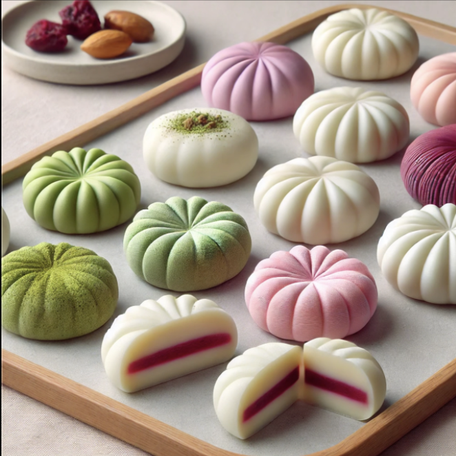

Instructions for printing Mochi
Step 1: Prepare the Ingredients
• Combine glutinous rice flour, sweetener, water, and flavor/color additives in a bowl.
• Mix until the consistency is smooth and stretchy. Ensure there are no lumps.
Step 2: Load the Printer
• Load the dough into the printer’s main extrusion cartridge.
• If using fillings, load them into a secondary cartridge for precise filling deposition.
Step 3: Select the Design
• Choose or design a mochi model (e.g., round, dome-shaped mochi with a hollow center for filling).
Step 4: Print the Mochi
• Start by printing the outer mochi shell layer.
• If filled, pause the printer mid-layer to inject filling before continuing the top layer.
Step 5: Steam Post-Printing (Optional)
• Steam the printed mochi for 5–10 minutes to enhance texture and elasticity.
Step 6: Cool and Serve
• Allow the mochi to cool to room temperature before serving or refrigerating.